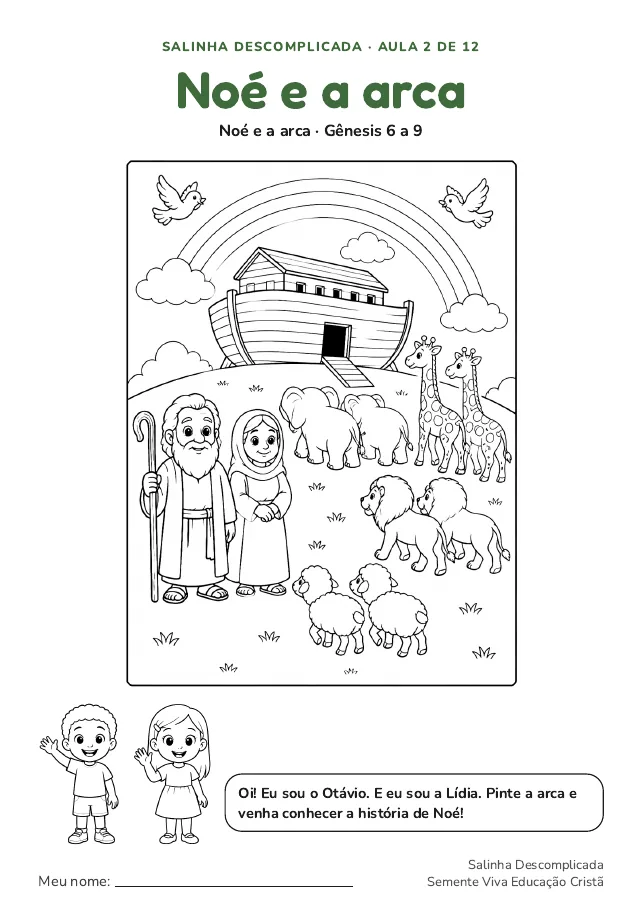
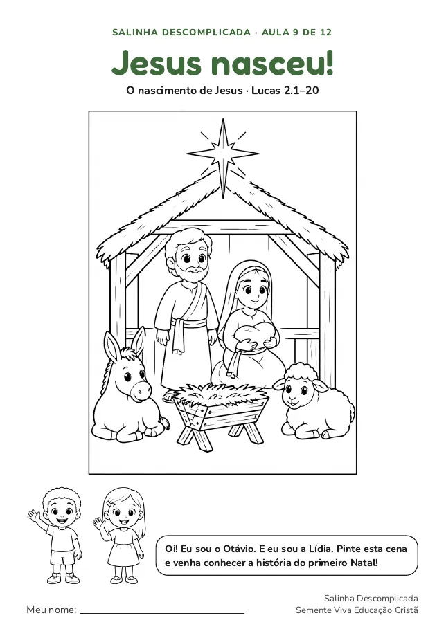
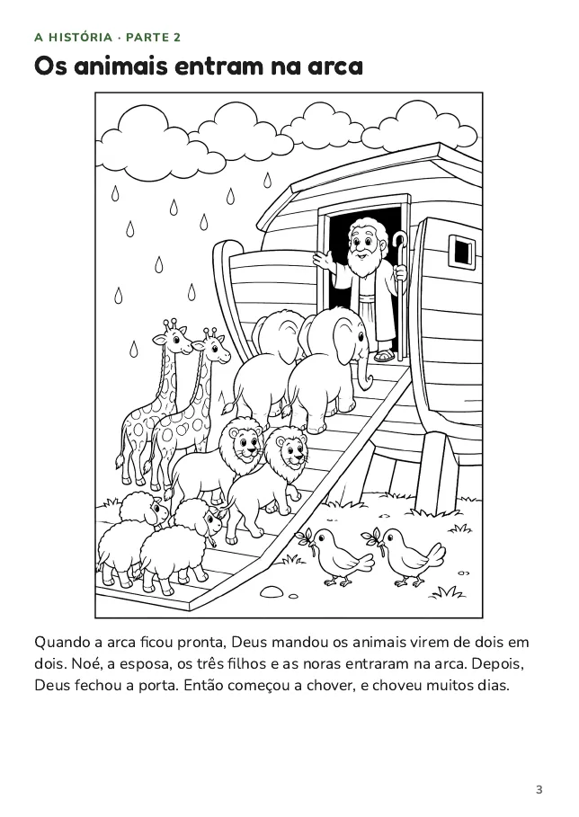
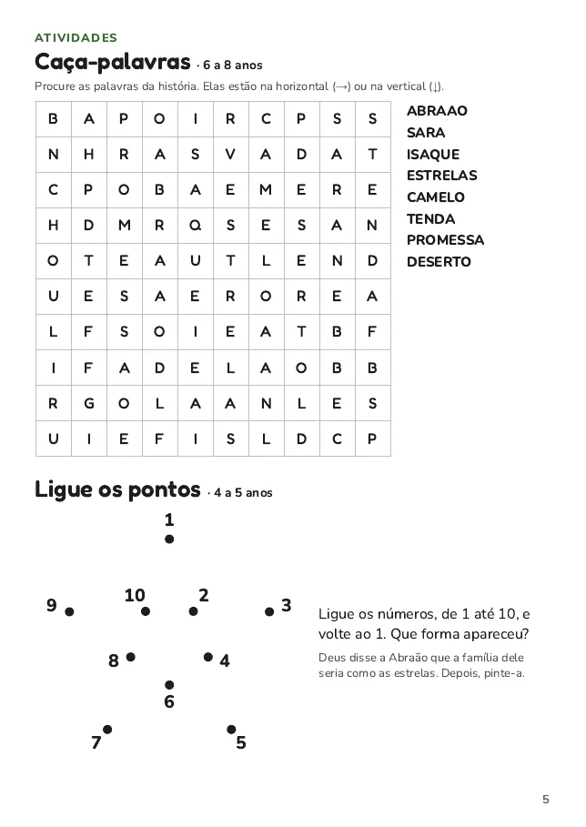
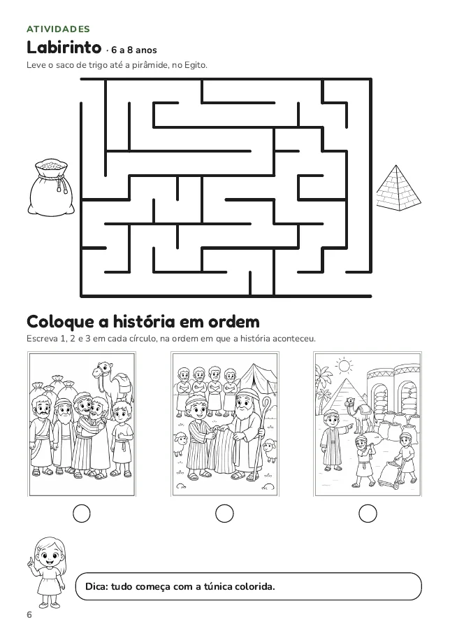
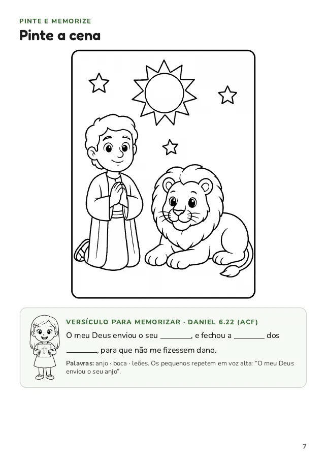
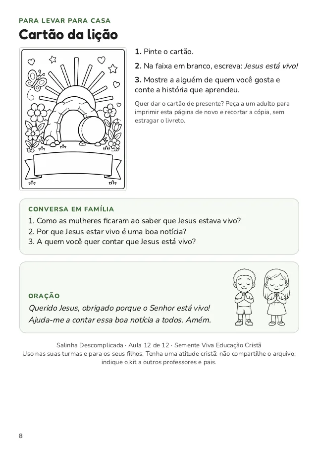

Para quem ensina crianças de 4 a 8 anos
Aula bíblica pronta para imprimir: chegue ao domingo sem correria
Salinha Descomplicada: 12 aulas do Gênesis à ressurreição de Jesus, para crianças de 4 a 8 anos. Você imprime o livreto ilustrado, lê o plano de 45 minutos e dá a aula, sem passar a semana montando material.
Baixar a aula de amostra grátis100% grátis · PDF completo · sem cadastro · imprima em casa, na impressora comum.
- Texto bíblico na ACF
- Servem a igrejas de várias tradições
- Imprime em A4, frente e verso


- 12aulas, do Gênesis à ressurreição
- 8páginas no livreto de cada aula
- 45minutos de roteiro pronto
- 2trilhas: 4 a 5 e 6 a 8 anos
Você conhece essa semana?
O tempo de preparo vira o maior desafio de quem ensina crianças
- Sábado à noite e a aula de amanhã ainda não tem atividade.
- Desenhos soltos da internet, cada um num estilo, sem ligação com a história que você vai contar.
- A criança termina a atividade em cinco minutos e a turma começa a se agitar.
- E a dúvida: “será que este material é adequado para a idade e para a nossa igreja?”
Quem ensina crianças dá o melhor de si, e merece chegar à sala tranquilo, com a história, a conversa, as atividades e a oração já organizadas.
Salinha Descomplicada é a aula pronta, do começo ao fim
Cada aula chega com o livreto das crianças e o plano do professor. Você imprime, dobra e ensina. O trabalho de preparar já foi feito.
O que vem em cada aula
Tudo para uma aula de 45 minutos, sem improviso
Livreto de 8 páginas
Capa para colorir, história ilustrada em três partes, atividades, versículo, cartão e oração, num livrinho A5 que cada criança leva para casa.
Plano da aula
Roteiro minuto a minuto, perguntas com as respostas, notas para o professor e gabarito das atividades. Cabe em 2 páginas.
Duas trilhas de atividades
De 4 a 5 anos: pintar, ligar os pontos, repetir o versículo. De 6 a 8 anos: caça-palavras, labirinto, ordenar a história, completar o versículo.
Versículo na ACF
Um versículo curto por aula, com lacunas para completar e uma frase simples para os pequenos repetirem.
Cartão e conversa em casa
Cada criança leva um cartão para pintar e três perguntas para conversar com a família, levando a aula para além da igreja.
Pronto para sua impressora
A4, frente e verso, 2 folhas dobradas. Sem gráfica, sem programa especial e com desenhos que gastam pouca tinta.
Quer ver tudo isso na prática? Baixe uma aula completa e teste com a sua turma.
Baixar a amostra grátisComo funciona
Da tela para a sala de aula em três passos
Escolha a aula
Do Gênesis à ressurreição de Jesus, na ordem ou na que combinar com o seu momento.
Imprima e dobre
Duas folhas A4, frente e verso, dobradas ao meio: o livrinho fica com as páginas em ordem.
Dê a aula
Conte a história, converse, deixe as crianças fazerem as atividades e terminem com o versículo e a oração.
Veja por dentro
Páginas reais do material





Cuidado com o conteúdo
Feito para ensinar com tranquilidade
Fiel e simples
- Histórias bíblicas contadas em linguagem de criança.
- Versículos de memorização na Almeida Corrigida Fiel (ACF).
- Conteúdo com revisão teológica.
Respeitoso com as igrejas
- Jesus nunca aparece com o rosto nas ilustrações.
- A cruz, quando aparece, está sempre vazia.
- Histórias contadas sem cenas de violência.
Plano de aula da amostra
Veja como é o plano do professor
Este é o plano da aula “Jesus nasceu!”, que acompanha o livreto na amostra grátis. Todas as aulas da coleção seguem o mesmo formato: você lê em poucos minutos e sabe o que fazer a cada momento.
Jesus nasceu!
O nascimento de Jesus · Lucas 2.1–20 · crianças de 4 a 8 anos · 45 minutos
Verdade central: Deus enviou Jesus porque nos ama.
Objetivo: Que a criança conheça a história do nascimento de Jesus e perceba que ele é a boa notícia que Deus enviou para todas as pessoas.
Material: o livreto impresso, lápis de cor, lápis e, se quiser, tesoura e cola.
Roteiro de 45 minutos
| 0–5 min | Acolhida. Receba as crianças, entregue o livreto e pergunte: Alguém já recebeu uma notícia muito boa? Como foi? Deixe as crianças contarem. |
|---|---|
| 5–15 min | História. Mostre a capa e leia as páginas 2, 3 e 4 em voz alta, mostrando as figuras. Pare nas imagens e deixe as crianças dizerem o que veem. |
| 15–20 min | Conversa. Use as perguntas abaixo. Aceite respostas curtas: o objetivo é recontar com as próprias palavras. |
| 20–35 min | Atividades. 4 a 5 anos: pintar a capa e a cena da página 7 e ligar os pontos. 6 a 8 anos: caça-palavras, labirinto e ordem da história (páginas 5 e 6). |
| 35–40 min | Versículo. Leia Lucas 2.11 duas vezes. Os pequenos repetem “nasceu hoje o Salvador”. Os maiores completam as lacunas da página 7. |
| 40–45 min | Oração e cartão. Ore com as crianças e explique o cartão da página 8. |
Perguntas para a conversa
- Para onde Maria e José viajaram? Para Belém.
- Quem apareceu aos pastores e qual foi a boa notícia? Um anjo; hoje nasceu o Salvador.
- O que os pastores fizeram depois? Foram ver Jesus, contaram a todos e louvaram a Deus.
- Para pensar: que boa notícia você gostaria de contar a alguém?
Versículo de memorização
Lucas 2.11 (ACF): Pois, na cidade de Davi, vos nasceu hoje o Salvador, que é Cristo, o Senhor.
O plano completo, com notas para o professor e gabarito das atividades, vem no PDF da amostra.
Baixar a amostra com o plano completoTeste antes de qualquer decisão
Baixe uma aula completa, grátis
A aula “Jesus nasceu!” vem inteira: plano do professor, livreto das crianças pronto para imprimir e instruções passo a passo. Você vê a qualidade e a facilidade de verdade, com a sua turma.
PDF de 8 páginas, sem cadastro. Pode compartilhar com outros pais e professores.
É para você se…
- ensina na escola bíblica dominical ou no ministério infantil;
- faz o culto doméstico com os filhos;
- conduz um grupo pequeno de crianças de 4 a 8 anos;
- quer aulas organizadas, sem passar horas montando material.
Talvez não seja para você se…
- procura aplicativo ou vídeo: o material é em PDF para imprimir;
- não tem como imprimir em casa ou na igreja.
Perguntas frequentes
Tire suas dúvidas
Preciso de uma impressora especial?
Não. Uma impressora comum, jato de tinta ou laser, com papel A4. Se imprime frente e verso, o livreto sai em 2 folhas. Se não, dá para imprimir um lado e depois o outro.
Funciona com crianças de idades diferentes na mesma sala?
Sim. Cada aula tem atividades para 4 a 5 anos e para 6 a 8 anos, no mesmo livreto. Cada criança faz a trilha da sua idade.
Serve para a minha igreja?
As aulas contam histórias bíblicas conhecidas por igrejas cristãs de diferentes tradições. Jesus aparece sem rosto e a cruz é sempre vazia, para evitar pontos de discordância entre denominações.
Posso imprimir quantas cópias eu quiser?
Para as turmas que você ensina e para os seus filhos, sim. Pedimos que não compartilhe os arquivos com outros professores ou pais: se conhece quem gostaria de usar, indique o material. Cristão não promove a pirataria.
A amostra é grátis mesmo? Tem pegadinha?
É grátis mesmo, sem cadastro e sem cobrança. É uma aula completa (plano do professor e livreto das crianças) para você conhecer o material antes de qualquer decisão.
Posso compartilhar a amostra com outras pessoas?
Pode, e agradecemos! Compartilhe o PDF da amostra inteiro, sem alterar e sem cobrar, ou indique este site para outros pais e professores.
Quando a coleção completa fica disponível?
Em breve. Enquanto isso, baixe a aula de amostra e volte a esta página para acompanhar as novidades.
E se eu quiser a coleção completa e não gostar?
A coleção completa terá garantia incondicional de 7 dias. E, antes de decidir, você já pode testar uma aula inteira de graça.
Quem faz
Semente Viva Educação Cristã
Criamos materiais bíblicos prontos para imprimir para quem ensina crianças na igreja e em casa. Acreditamos que a Bíblia é o centro da aula, que a criança aprende com história, desenho e atividade na mão, e que um bom material é aquele que o professor consegue usar de verdade, numa impressora comum.
Siga @sementevivaec no Instagram para acompanhar as novidades e as novas aulas.
Comece pela aula de amostra
Veja como é ter a aula pronta no domingo de manhã.
Baixar a aula de amostra grátisSem cadastro. A coleção completa chega em breve.